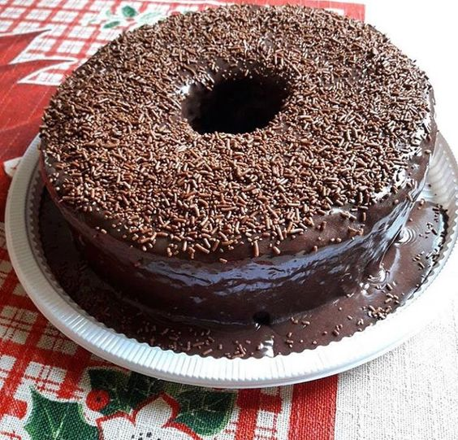
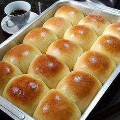
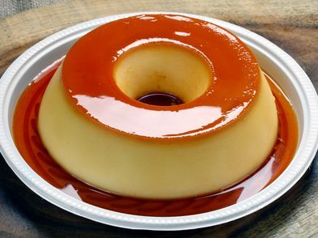
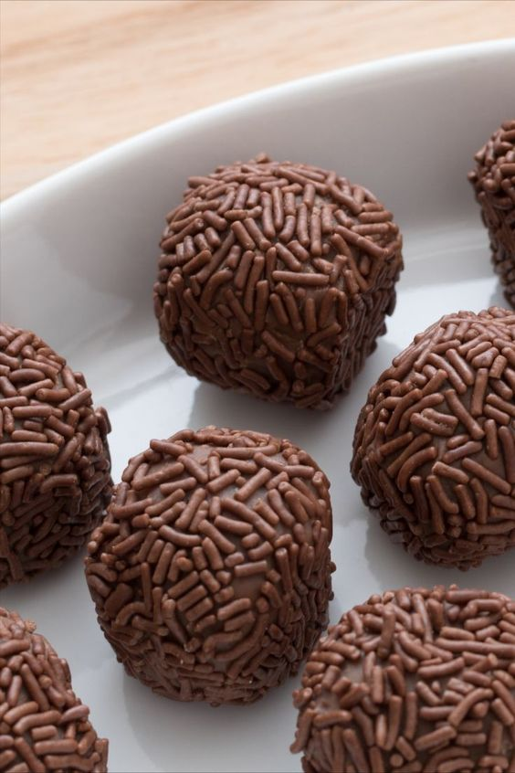

Receitas Pra Fazer em Casa
Bolo de Chocolate

Ingredientes
- 3 ovos
- 1 xícara de chá de leite morno
- 3 colheres de sopa de margarina
- 2 xícaras de chá de açúcar
- 1 xícara de chá de chocolate ou achocolatado em pó
- 2 xícaras de chá de farinha de trigo
- 1 colher de sopa de fermento em pó
- 6 colheres de sopa de açúcar
- 3 colheres de sopa de margarina
- 3 colheres de sopa de chocolate em pó
- 200 ml de creme de leite
Pão Caseiro

Ingredientes
- 2 ovos
- 250 ml de leite morno
- 3 colheres de sopa de óleo
- 1 colher de sopa de margarina
- 4 colheres de sopa de açúcar
- ½ colher de sopa de sal
- 500 g de farinha de trigo (aproximadamente)
- 15 g de fermento biológico fresco ou 5g de fermento biológico seco
Pudim

Ingredientes
- 1 lata de leite condensado
- 1 lata de leite (medida da lata de leite condensado)
- 3 ovos inteiros
- 1 xícara (chá) de açúcar
- 1/2 xícara de água
Brigadeiro

Ingredientes
- 1 Lata de leite condensado
- 1 Colher (sopa) de manteiga ou margarina
- 2 Colheres (sopa) de chocolate em pó
- 1 Chocolate granulado para decorar